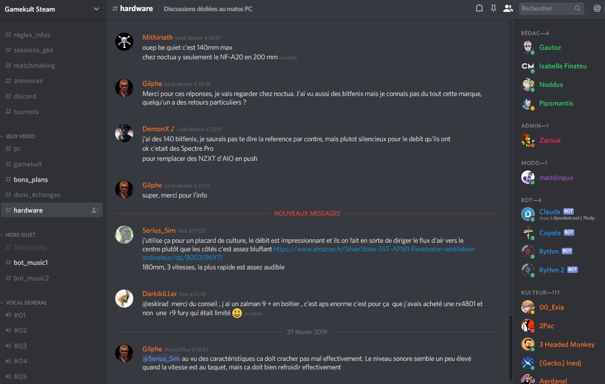
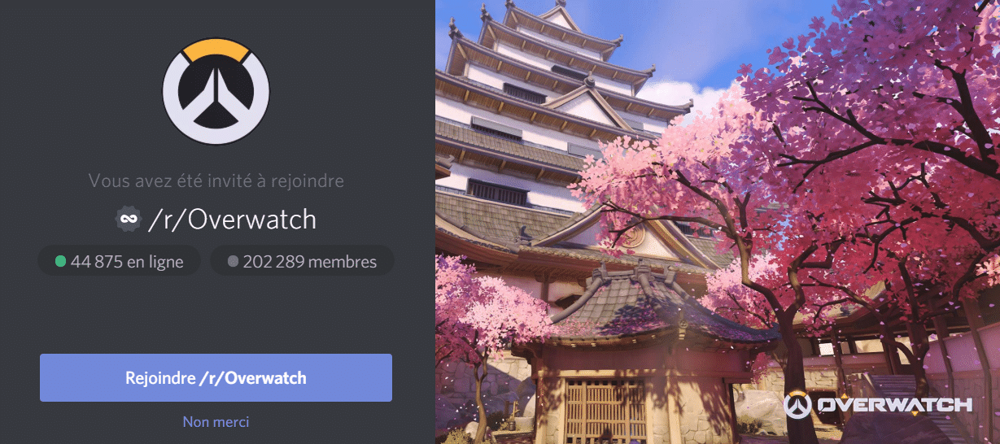
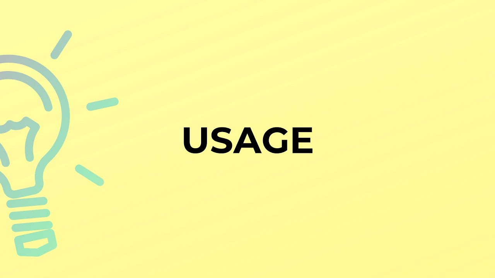
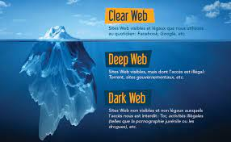
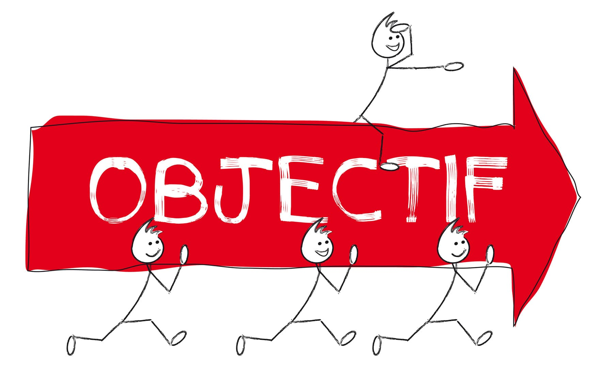

Discord a été créé par Jason Citron et Stanislav Vishnevskiy et a été lancé en mai 2015. Au départ, Discord était destiné à être une plateforme de communication vocale pour les joueurs.

Les utilisateurs peuvent créer leurs propres serveurs sur Discord. Un serveur est un espace virtuel où les utilisateurs peuvent se regrouper autour d'un centre d'intérêt commun, comme un jeu, une communauté, ou un sujet spécifique. Les créateurs de serveurs peuvent définir des paramètres tels que les permissions d'accès, les rôles, et les canaux de discussion.

Rejoindre des serveurs : Les utilisateurs peuvent rechercher et rejoindre des serveurs existants sur Discord en utilisant des invitations ou des liens d'invitation partagés. Une fois qu'ils ont rejoint un serveur, les utilisateurs peuvent participer aux discussions et interagir avec les autres membres du serveur.
Les sources de revenu de Discord sont : les abonnements Nitro, faire de la publicité, faire des partenariats. Discord est une entreprise lucrative

Les usages publiques et privés de Discord : Usages publiques : Communauté de jeu et Création de contenues. Usages privés : Discussions entre amis et Entreprise et travailleurs à distance
Pour protéger nos données, Discord fait en sorte de : Respecter des lois sur la vie privée, Chiffrer de bout en bout et maintiennent un Contrôle de confidentialité

Les informations visibles sont : le Nom d'utilisateur, la Photo de profil, le Statut en ligne, ... Les informations cachées : Les Données personnelles (adresse email, adresse IP, ...)

Objectifs de Discord sont : d'Offrir une plateforme de communication, Créer un environnement sûr pour les utilisateurs et Encourager la créativité et l'innovation